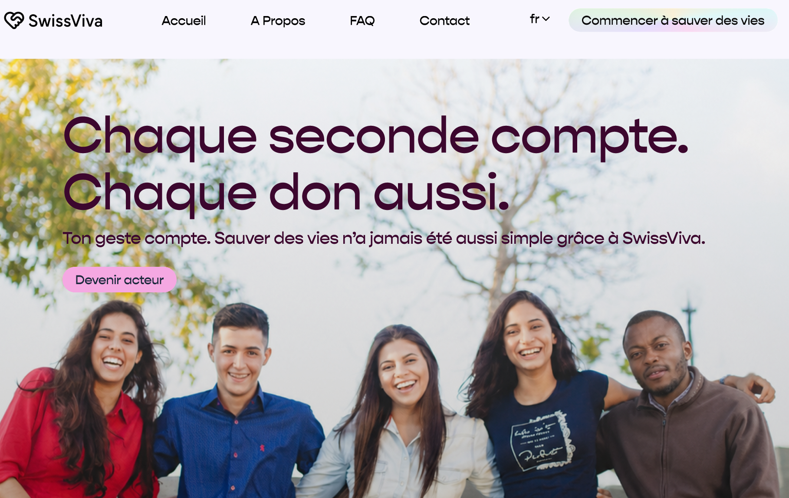

ODDS
Un projet inter-cours visant à moderniser et simplifier la démarche du don d'organes en Suisse — d'une recherche UX approfondie jusqu'à une plateforme interactive accessible et humaine.

Faciliter un choix essentiel.
La Suisse affiche un taux de don d'organes relativement bas en comparaison européenne. Les barrières administratives, le manque de sensibilisation claire et la sensibilité émotionnelle entourant le sujet freinent souvent les décisions éclairées.
L'objectif d'ODDS était de repenser cette expérience : la rendre plus rassurante, transparente et empathique grâce à une interface épurée guidant pas à pas l'utilisateur dans l'expression de sa volonté.
Comprendre les usagers.
Entretiens & Analyse
Mise en place de questionnaires et d'entretiens qualitatifs pour cartographier les freins émotionnels et la méconnaissance du cadre légal suisse.
Enseignements clés
Nécessité de rassurer avec des explications simples, sans jargon médical, et de proposer un partage facilité du choix avec les proches.
....
Parcours & Wireframes.
....
Sobriété & Clarté.
....
....
Prototype interactif Figma.
...
Ce que j'ai appris.
Ce projet m'a appris à aborder des sujets à forte charge émotionnelle avec tact et rigueur, en plaçant la recherche utilisateur et l'empathie au cœur de chaque choix de design d'interaction.